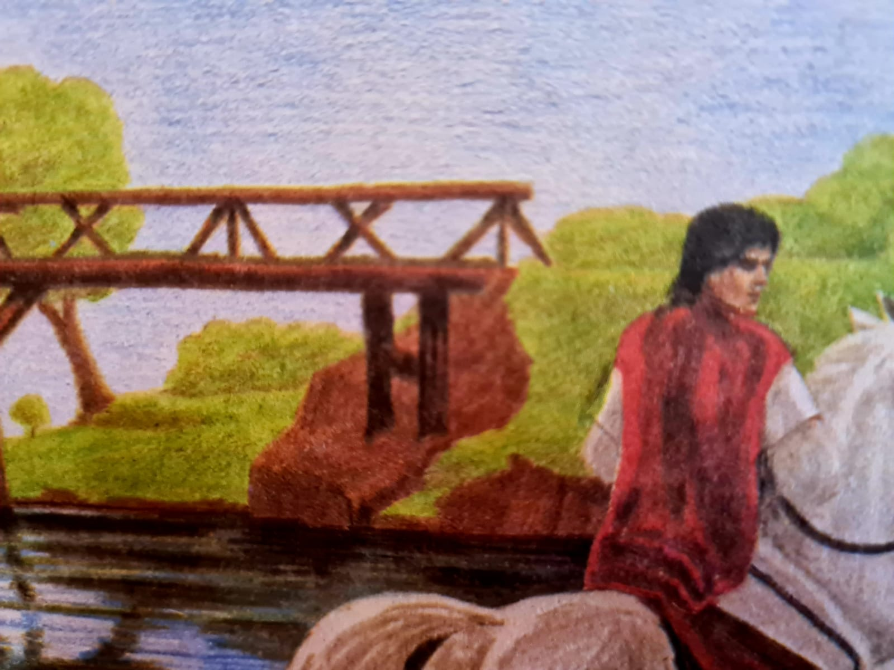

Și merseră ce merseră, prin locuri pustii și greu de străbătut.
La trecerea unui pod văzu o nuntă de furnici. Și Harap Alb trecu prin apa adâncă, cu calul pentru a apară gâzele nevinovate. Drept mulțumire o furnică zburătoare i-a dat o aripă și i-a spus că o să îl ajute în situații grele dacă îi dă foc acesteia. I-a mai spus că tot neamul ei o să vină în ajutorul lui.
Acest episod arată bunătatea lui Harap Alb și faptul că făcând bine unei mase de viețuitoare îți faci ție bine.
